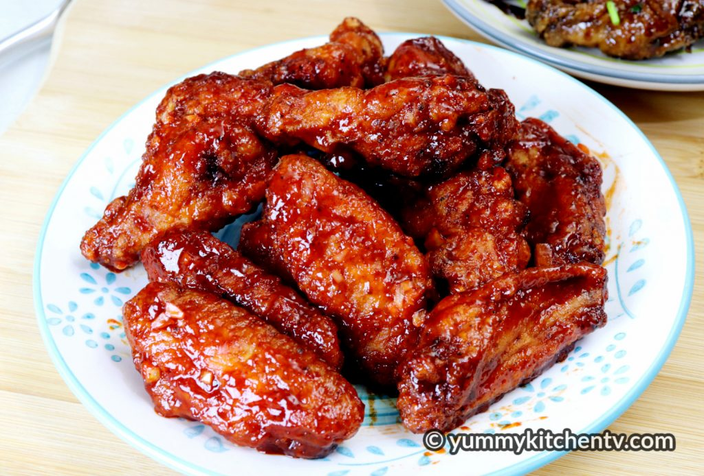

Buffalo Chicken Wings
Buffalo Chicken Wings is made by marinating chicken wings
with salt, pepper and calamansi juice, then dredging this in a dry mix
made with all purpose flour, corn starch, pepper, garlic powder, paprika
and frying in oil. It is then added to a hot buffalo sauce made by butter,
garlic, hot sauce, ketchup, brown sugar and soy sauce and cooked further
to make tasty buffalo wings.
Ingredients:
- 1 kg. chicken wings
- 1 tsp salt
- 1 tsp black pepper
- 1 tbsp. calamansi juice (or lemon juice)
Breading:
- 1/2 cup all purpose flour
- 1/2 cup cornstarch
- 1/2 cup cornstarch
- 1 tsp. black pepper
- 1 tsp garlic powder
- 1 tsp. paprika
- 1/2 tsp. baking powder
Sauce:
- 3 tbsp. butter unsalted
- 3 cloves garlic (minced)
- 1/4 cup hot sauce (adjust as needed)
- 1/4 cup ketchup
- 1 tbsp brown sugar (optional)
- 1 tbsp. soy sauce (optional)
Cooking Procedure:
-
Cut the joint between the drumette and wingette. Remove the tip (reserve
for making chicken stock). Pat dry. Add salt, ground black pepper and
calamansi juice. Mix well. Marinate for at least 1 hour.
-
Combine all the breading ingredient. Coat each wing with breading. Shake
off excess.
-
Heat oil. Fry the breaded chicken wings in batches. do not overcrowd the
pan to maintain the temperature of the oil for crispy chicken wings. Fry
for 10 to 12 minutes (light brown).
-
After 10 minutes, remove from oil. Let it sit for at least 15 minutes.
Double-fry it for well-cooked and crispy.
-
Set the heat to high. Then put the chicken back to the oil and fry until
crispy and golden brown. Set aside while making the sauce.
-
FOR THE SAUCE. Melt butter and saute’ garlic. Then add
ketchup, hot sauce, sugar and soy sauce. Mix well and cook until thick.
Then toss the fried chicken wings until well coated.